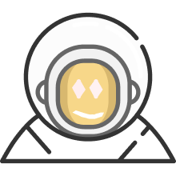
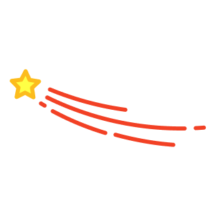
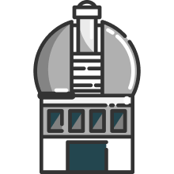

Universe Seekers
Embark on a cosmic journey where imagination knows no bounds!

Embark on a cosmic journey where imagination knows no bounds!
Dive into the vastness of galaxies and unravel the mysteries beyond our Milky Way. Learn about the different types of galaxies, their shapes, and the billions of stars they contain.
Discover fascinating facts about the planets in our solar system. From the scorching surface of Mercury to the mysterious rings of Saturn, embark on a journey through space and learn about the unique features of each planet.
Twinkling lights in the night sky hold stories of their own. Explore the life cycles of stars, their sizes, and the constellations they form. Let the beauty of the stars ignite your curiosity
Engage spark curiosity by trying some activities related to space
Remember to check the local weather conditions and any regulations related to stargazing in these areas for the best experience.
Welcome to the ultimate guide for your space museum adventure! Explore top-notch museums worldwide with unique celestial experiences. Plan your visit by researching opening hours, ticket info, and guided tours. With transportation options in mind, embark on your stellar journey to the cosmos. Safe travels, space explorer!
